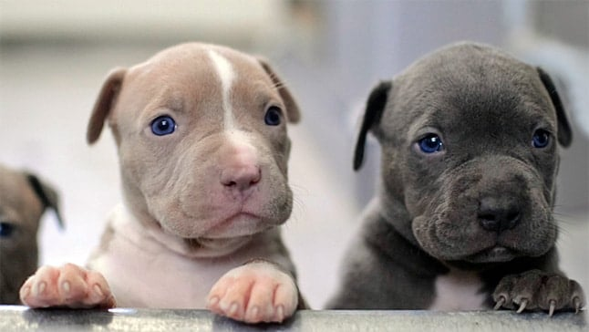
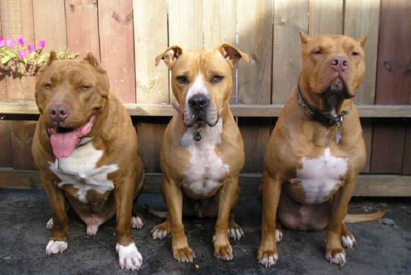
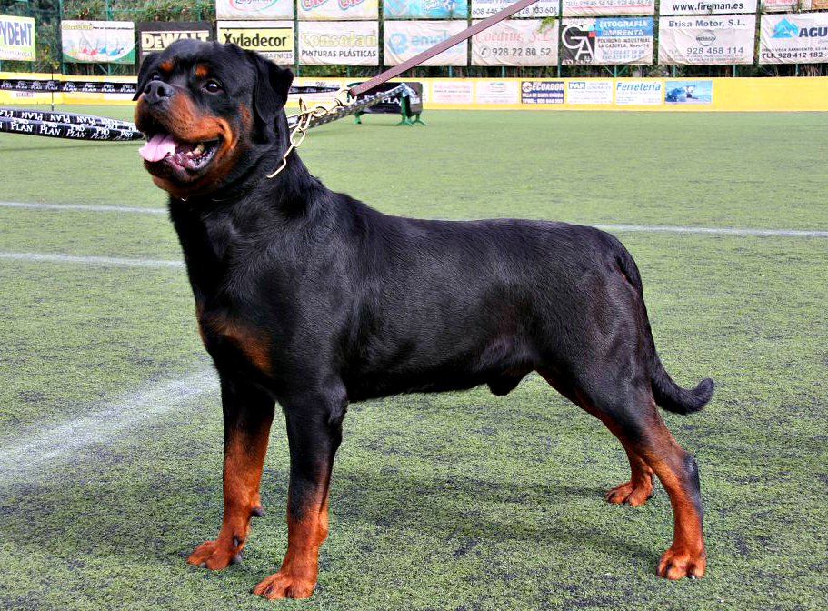
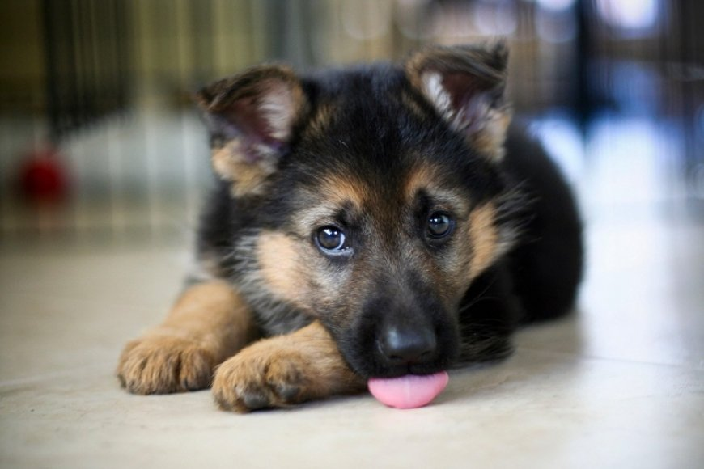
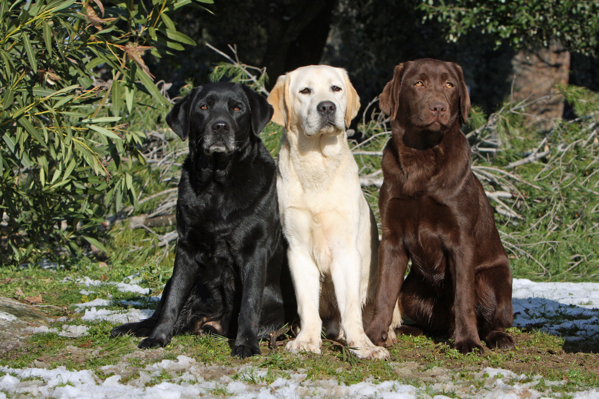
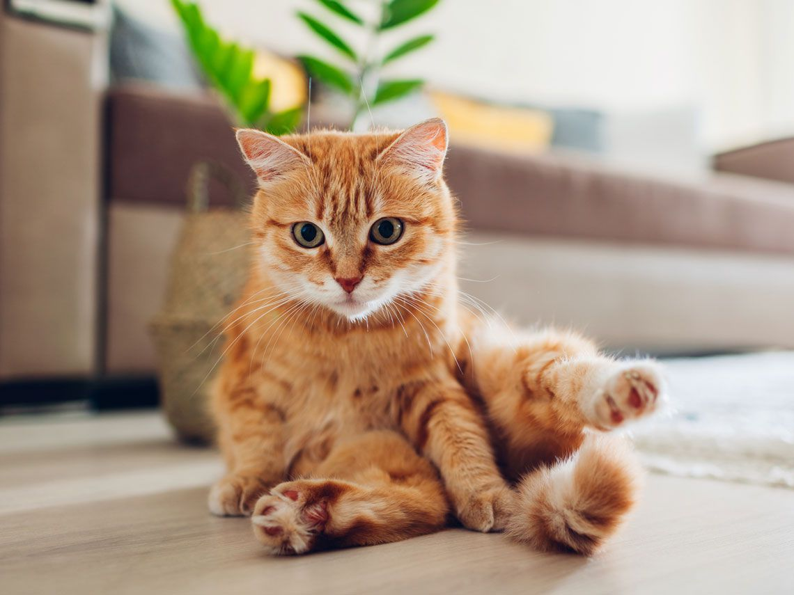

|
|
PERROS
Un perro es el compañero más fiel del mundo, su amor es incondicional y para toda la vida. Es el mejor entre las mascotas así que debes tener una te invito a nuestro sitio a que conozcas y elijas a los más comprados y disponibles. Tener a tu lado a un perro te ayuda a disminuir tus niveles de estrés con el simple hecho de darle cariño.
 
- Rottweiler

- Pastor Alemán


GATOS
Los gatos son muy cariñosos y tiene su carácter codicioso, pero también valoramos su independencia, es decir, necesitan menos cuidados que otras mascotas. Los gatos pueden ayudar a las personas a recuperarse más rápido de un trauma emocional, como el fallecimiento de un ser querido.

dirección: calle Luis cordero y alianza centro comercial el puesto del sol local nro.65
teléfono: 2102854- 096584235 correo: mascotitasfelices@gmail.com
2021-2022 derechos reservados